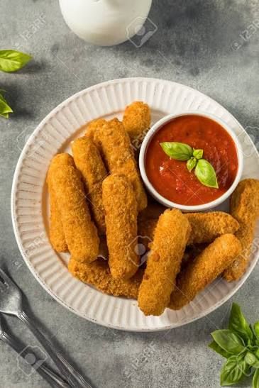

Palitos de Mozzarella Caseros

Los palitos de mozzarella son un clásico irresistible. Su exterior queda dorado y crujiente mientras que el interior ofrece queso fundido y elástico. Son ideales como snack, entrada o para compartir con amigos y familiares.